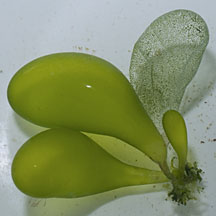
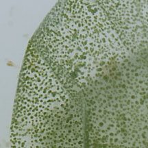
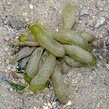
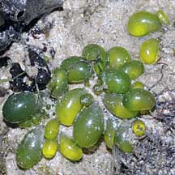

|
|
| green seaweeds text index | photo index |
| Seaweeds > Division Chlorophyta |
| Bubble
green seaweed Boergesenia forbesii* Family Siphonocladaceae updated Sep 2019 Where seen? These bright green bubbles are commonly seen on our Southern shores, growing on coral rubble in small scattered clusters. Features: Clusters of elongated bubbles (3-4cm long and about 1cm wide) usually attached to hard surfaces. The bubbles are sometimes also pear-shaped. Bright green to yellowish green, the seaweed is smooth and shiny. The skin is thin so the entire bubble is translucent. Sometimes, 'empty' skins are seen. According to AlgaeBase, there are 2 current species: Boergesenia forbesii and Boergesenia magna. Sometimes confused with Green sea sausage seaweed (Bornetella sp.) which is more club- to cylindrical in shape and is opaque, and Beaded cushion green seaweed (Valonia sp.) which has tinier bubbles packed closely together. Here's more on how to tell apart some green seaweeds. |
|
 St. John's Island, Apr 12 |
 St. John's Island, Apr 12 |
 Pulau Jong, Jul 06 |
*Species are difficult to positively identify without close examination of internal parts.
On this website, they are grouped by external features for convenience of display.
| Bubble green seaweed on Singapore shores |
On wildsingapore
flickr
|
| Other sightings on Singapore shores |
 Terumbu Berkas, Jan 10 |
 Pulau Salu, Aug 10 |
| Boergesenia
species recorded for Singapore Pham, M. N., H. T. W. Tan, S. Mitrovic & H. H. T. Yeo, 2011. A Checklist of the Algae of Singapore.
|
Links
|